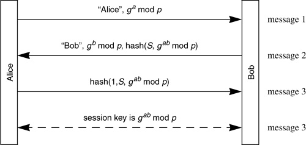

Networking Security Networking Security Networking Security Security Networking Security Networking Security Networking Charlie Kaufman Radia Perlman Mike Speciner Prentice Hall Network Security: Private Communication in a Public World, Second Edition Networking Security Networking Security Networking Security Security Networking Security Networking Security Networking Charlie Kaufman Radia Perlman Mike Speciner Prentice Hall Network Security: Private Communication in a Public World, Second Edition
16.14. Homework
| 1. | Talk about the properties of each of the following protocols, such as perfect forward secrecy, escrow foilage against passive attacks, escrow foilage against active attacks, identity hiding, perfect forward secrecy for identity hiding. Assume private encryption keys are escrowed and private signature keys are not escrowed.
Protocol 16-2. A modified form of Protocol 16-2 in which the first two messages are encrypted with the other end's public key rather than signed by the transmitter's private signature key. So in message 1 Alice sends {"Alice", ga mod p} encrypted with Bob's public key, and Bob in message 2 sends {"Bob", gb mod p} encrypted with Alice's public key. Protocol 16-4. Protocol 16-9, where Alice and Bob share a secret key S.

|
Each side sends a nonce encrypted with other's public encryption key, resulting key is  of two nonces of two nonces Assume Alice and Bob share a secret S. Design a protocol in which they can do mutual authentication and establish a shared secret with PFS. Can it be done without Diffie-Hellman or any other form of public key cryptography? Protocol 16-2, but with each side deterministically generating the Diffie-Hellman private numbers as described in §16.4 PFS-Foilage from a seed given to the client machine and escrowed at the server machine.
|
| 2. | Design a protocol in which Bob chooses whether to require Alice to send a cookie (see §16.5.1 Cookies).
|
| 3. | Design a method of utilizing puzzles in a stateless manner similar to stateless cookies (see §16.5.2 Puzzles).
|
| 4. | Referring to §16.6 Endpoint Identifier Hiding, modify Protocol 16-4 to hide the initiator's identity rather than the target's identity.
|
| 5. | As mentioned in §16.6 Endpoint Identifier Hiding, it is possible to design a protocol that will hide both identifiers from an active attacker, assuming that Alice (the initiator) already knows Bob's public key. Show such a protocol.
|
| 6. | Also as mentioned in §16.6 Endpoint Identifier Hiding, it is possible to hide both identities from active attackers if Alice and Bob share a secret key and there is a small set of entities that might initiate a connection to Bob. Show such a protocol.
|
| 7. | Devise a protocol based on a pre-shared secret key that hides identities and gives PFS for identity hiding. Make two variants, one in which an active attacker can learn only the initiator's identity, and one in which an active attacker can learn only the target's identity.
|
| 8. | Assuming private key operations are very slow, show a protocol that runs faster with an extra message. Suppose transmission delay is longer than the time it takes to do a private key operation. Would the protocol still complete faster with an extra message?
|
| |
| 9. | Design a variant of Kerberos in which the conversation between Alice and Bob can have perfect forward secrecy.
|
| 10. | Design a protocol that gives Bob the power of a stateless cookie, and also ensures against replay protection. (Hint: have the value of the nonce/cookie be a function of the time, a secret known to Bob, and the IP address of the connection initiator. Also, have Bob remember all successfully used nonces within the acceptable clock skew.)
|
| 11. | In the Protocol 16-6, explain why Bob knows that Alice is the real Alice, and not someone replaying Alice's messages. How does Alice know that it's the real Bob if she uses a different a each time? Modify the protocol to allow both Alice and Bob to reuse their a and b values, and yet have both sides be able to know they are talking to a live partner.
|
| 12. | Suppose a stateless cookie mechanism is used by Bob, and suppose he changes his secret periodically. What can he do to assure a connection attempt will succeed even if he changed his secret between the time the initiator asked for the cookie and returned it (assuming the initiator doesn't wait too long before returning the cookie)?
|
| 13. | Assume a stateless session resumption scheme as described in §16.9 Session Resumption. Suppose Bob changes his S every ten minutes, and yet you'd like to be able to resume sessions that have been idle for longer than that, say two hours. How might that work?
|
| 14. | Explain how, and under what circumstances, in the DASS session resumption protocol described in §16.9 Session Resumption, only Alice saves computation, only Bob saves computation, and they both save computation.
|
| 15. | Describe various methods of having Alice and/or Bob remember state from the last time they authenticated each other that allows them to resume a session and bypass the expensive public key cryptography. Describe a method in which Bob can save computation even if he hasn't kept state. Is there a clever way of having Bob remember state and not Alice?
|